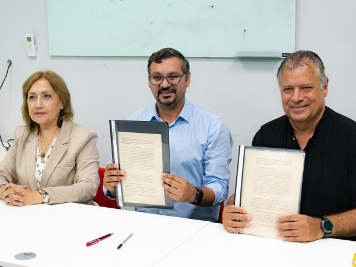
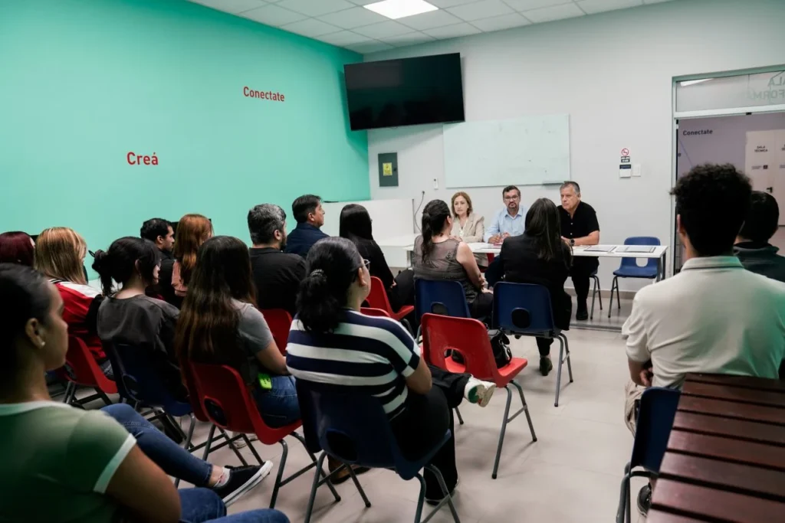

Tecnicatura Superior en Desarrollo de Software Multiplataforma
Quién se forme en la Tecnicatura Superior en Desarrollo de Software recibirá a lo largo de su cursada certificaciones intermedias de Formación Profesional y/o Capacitación Laboral, que le permitirán insertarse en el mundo del trabajo de manera más rápida y eficiente.

El comedor del Instituto Politécnico Formosa es modelo provincial y regional
El Gobierno de Formosa asegura que ningún alumno vea comprometida su alimentación ante la complicada situación económica generada por las políticas de ajuste y desfinanciamiento de la gestión libertaria nacional.
Leer más
Más conectividad y formación: fortalecen el desarrollo tecnológico con un acuerdo estratégico en Formosa
La articulación entre el Centro de Inclusión Digital "Eva Perón" y el Instituto Politécnico Formosa "Dr. Alberto Marcelo Zorrilla" impulsa la integración de la conectividad con la educación técnica, beneficiando a miles de familias y consolidando el desarrollo productivo provincial.
Leer más
Formosa fortalece la formación técnica con un convenio entre el Centro de Inclusión Digital y el Instituto Politécnico
El acuerdo permitirá que estudiantes realicen prácticas profesionalizantes en un entorno tecnológico de alto nivel, fortaleciendo sus habilidades técnicas y su compromiso social en un contexto de crecimiento de la educación técnica en Formosa.
Leer más